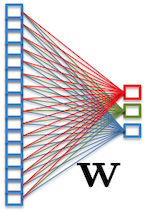

|  |
- Part 1 - Introduction
- 1.1: Introduction: machine learning, a couple of applications
[36 slides]
- 1.2: A short history of deep learning
[8 slides]
- 1.3: An extremely short crash course on fitting and generalization
[16 slides]
- Part 2 - Neural Networks and PyTorch
- Part 3 - Scaling up: computer vision, transfer learning, visualization
- Part 4 - Structure: sequences, graphs, attention
- Part 5 - Advanced applications
|
|
PyTorch sources:
The full PyTorch sources of the slides are here.
|
|
|
Pratical Excercise session:
(will be held by Edward Beeching, web site will be published shortly.)
Neural models in python for object detection and
future forecasting.
[Project page]
|
|